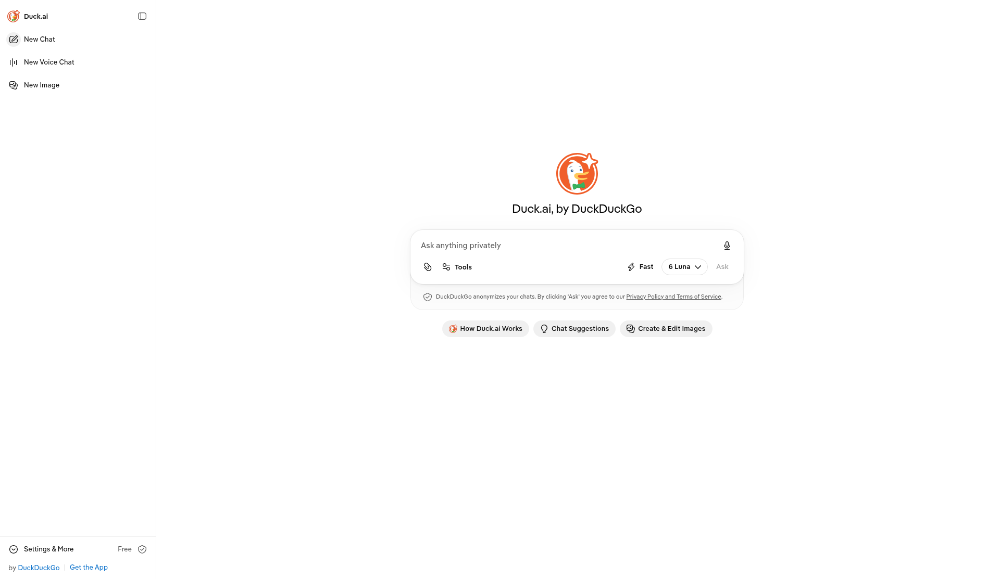
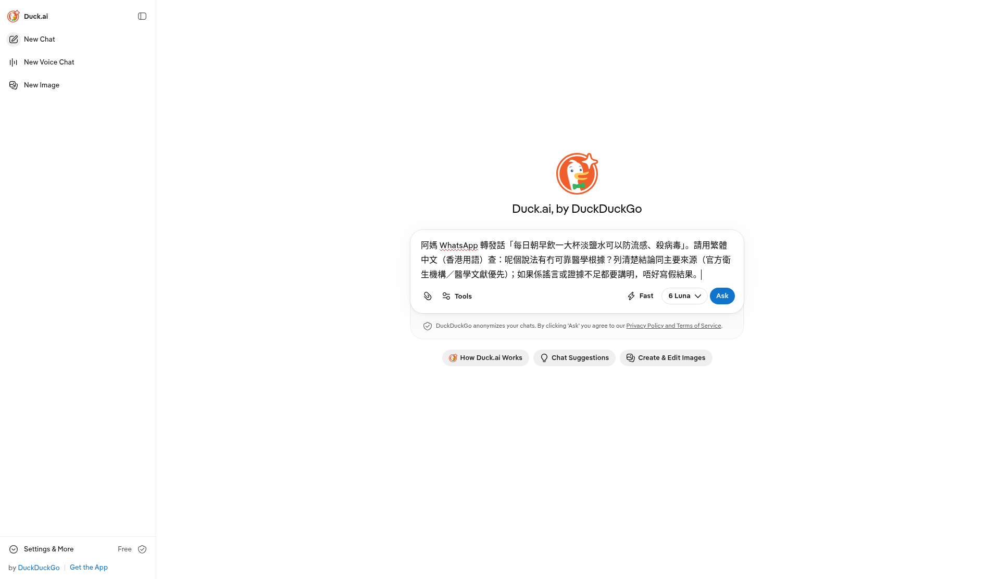
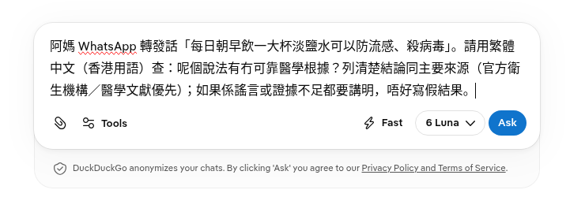
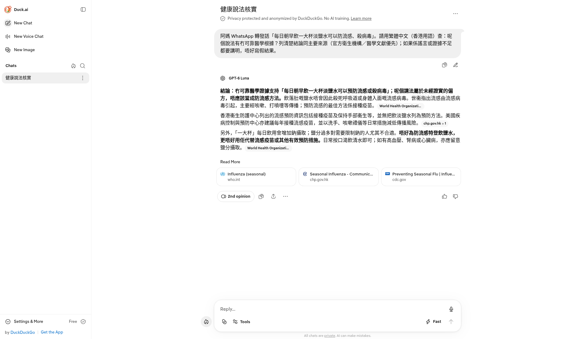

阿媽 WhatsApp 又轉發一句「喝鹽水防流感」。第43集用 Duck.ai（DuckDuckGo，duck.ai），免登入：空白輸入位寫「Ask anything privately」，貼查證提示，撳藍色 Ask。2026-10-24 21:27 畫面標題係「健康說法核實」，模型 GPT-6 Luna。結論係冇可靠醫學證據，講法屬於未經證實的偏方。來源卡見到 who.int、chp.gov.hk、cdc.gov。唔好用鹽水代替疫苗。示範轉發係拍片用。呢頁唔係醫療建議。
Reel 一句講晒：Duck.ai｜喝鹽水防流感／有冇根據
畫面結論：冇可靠醫學證據。未經證實的偏方。唔好用鹽水代替流感疫苗。來源係世衞、香港衞生防護中心、美國疾病控制與預防中心。AI 可能錯。呢頁唔係醫療建議。
你會學到
- 點樣開 duck.ai，免登入，見到「Ask anything privately」
- 點樣貼「喝鹽水防流感」查證提示，再撳藍色 Ask
- 點樣睇標題「健康說法核實」、GPT-6 Luna，同 who.int、chp.gov.hk、cdc.gov 來源卡
開始前準備
- 瀏覽器開 duck.ai。2026-10-24 實測冇登入。側欄徽章係 Free。官方產品頁寫 Free. No account required.
- 只貼轉發嗰句講法。電話、地址、病歷先遮走。下面示範句係拍片用，無真實受害人
- 預留時間撳入來源原文。未核對之前，唔好叫屋企人照飲或者照轉發
可抄提示
示範提示（虛構轉發，無真實受害人）
阿媽 WhatsApp 轉發話「每日朝早飲一大杯淡鹽水可以防流感、殺病毒」。請用繁體中文（香港用語）查：呢個說法有冇可靠醫學根據？列清楚結論同主要來源（官方衛生機構／醫學文獻優先）；如果係謠言或證據不足都要講明，唔好寫假結果。
你自己用就換上已遮走個人資料嘅轉發原文。出嚟嘅答案要自己讀，再撳入來源卡。AI 加咗劑量、偏方或者藥名，而來源原文冇寫，就唔好講返俾屋企。
3 步做法
免登入開 duck.ai。空白輸入位寫「Ask anything privately」。打咗字，Ask 先變藍。2026-10-24 畫面模式係 Fast，模型掣寫 6 Luna。回覆標 GPT-6 Luna。
-
開 duck.ai：開 duck.ai，唔使帳戶。見到「Duck.ai, by DuckDuckGo」同「Ask anything privately」。未打字之前，Ask 係灰色，撳唔到。
側欄有 New Chat、New Voice Chat、New Image、Settings & More，徽章 Free。底寫 by DuckDuckGo。呢步停喺空白頁，先抄上面嗰段提示。

真實畫面（2026-10-24，免登入）：第 1 步。未貼提示。輸入位寫「Ask anything privately」。Ask 灰色。側欄徽章 Free。 -
貼提示，撳藍色 Ask：將上面嗰段貼入「Ask anything privately」。Ask 變藍，先至撳。掣上有字，就係 Ask。等標題同回覆出齊。見到 Generating title 或者 Generating response，就係未完成。
未撳之前再睇一次：冇真實電話、地址、病歷。輸入框下面寫住 DuckDuckGo anonymizes your chats. By clicking 'Ask' you agree to our Privacy Policy and Terms of Service. 模式係 Fast，模型掣寫 6 Luna。

真實畫面（2026-10-24，免登入）：第 2 步。提示貼好。Ask 已經變藍。未撳。模式係 Fast，模型掣寫 6 Luna。 
真實畫面（2026-10-24，免登入）：第 2 步特寫。藍色 Ask。旁邊係 Tools、Fast、6 Luna。未撳。 -
睇結論同源：2026-10-24 21:27 實測（免登入，回覆標 GPT-6 Luna）標題係「健康說法核實」。第一句結論寫：冇可靠醫學證據支持「每日朝早飲一大杯淡鹽水可以預防流感或殺病毒」；呢個講法屬於未經證實的偏方，唔應該當成防流感方法。
來源卡三張：Influenza (seasonal)，who.int；Seasonal Influenza，chp.gov.hk；Preventing Seasonal Flu，cdc.gov。美國疾病控制與預防中心嗰張，當日懸停網址係 cdc.gov/flu/prevention。世衞卡標題 Influenza (seasonal) 對得上季節性流感資料頁。防護中心卡網域係 chp.gov.hk。
同一段寫：飲落肚嘅鹽水唔會因此殺死流感病毒。世衞指出預防流感的最佳方法係接種疫苗。防護中心列出嘅預防資訊包括接種疫苗同保持手部衞生，並無把飲淡鹽水列為預防方法。畫面寫唔好為防流感特登飲鹽水，更唔好用佢代替流感疫苗或者其他有效預防措施。亦寫一大杯鹽水會增加鈉攝取，高血壓、腎病或者心臟病要留意鹽分。日常按口渴飲清水即可。
回覆下面有 Read More。底寫 All chats are private. AI can make mistakes. 頂欄寫 Privacy protected and anonymized by DuckDuckGo. No AI training. 未撳入 who.int、chp.gov.hk、cdc.gov 原文之前，唔好將結論講成你自己嘅醫學判斷。

真實畫面（2026-10-24 21:27，免登入）：結論＝冇可靠醫學證據／未經證實偏方。來源卡 who.int／chp.gov.hk／cdc.gov。模型 GPT-6 Luna。標題「健康說法核實」。
回覆旁邊有個上載箭嘴，按鈕面無字。2026-10-24 21:27 撳開 Share 對話框：寫 Creates a copy of the chat、Encrypted. Not even DuckDuckGo can read your chat.、Follow-ups remain private.。Link expires in 有 1 Day、2 Days、7 Days、30 Days，2 Days 已選。下面係 Create Share Link。今次冇撳 Create Share Link，冇公開連結。
常見錯誤／注意事項
- 當畫面話鹽水有效：21:27 結論係冇可靠醫學證據，未經證實的偏方。唔好改成相反結果再講俾人聽。
- 用鹽水代替疫苗：畫面寫唔好用鹽水代替流感疫苗或者其他有效預防措施。健康以香港衞生署、衞生防護中心同醫生為準。
- 淨係睇第一句：第一句之後仲有來源卡。who.int、chp.gov.hk、cdc.gov 要撳入原文。
- 當 AI 答案係醫療建議：AI 可能錯。呢頁唔係醫療建議。畫面底寫 All chats are private. AI can make mistakes.
- 話一定要登入：2026-10-24 空白頁同貼好提示都未登入。側欄徽章係 Free。官方產品頁寫 No account required。
- 搵灰色 Ask：未打字，Ask 係灰色。貼咗提示先變藍。藍色 Ask 先至送出。
- 撳 Create Share Link：21:27 只打開 Share，2 Days 已選，冇撳 Create Share Link，冇公開連結。想留低連結先自己決定失效日。
- 當示範係真實個案：轉發句子係拍片用，無真實受害人。真實病歷、電話、地址先遮走。
AI 可能錯。呢頁唔係醫療建議。健康以香港衞生署、衞生防護中心同醫生為準。示範虛構轉發，無真實受害人。查完可以將「未經證實偏方、唔好用鹽水代替疫苗」同來源講返俾轉發嘅人。呢頁教你查轉發，唔係叫你轉發呢則片。
香港用戶留意
示範用瀏覽器開 duck.ai，冇裝 App，免登入。要認嘅字：Ask anything privately、藍色 Ask、Fast、6 Luna、健康說法核實、GPT-6 Luna。來源卡網域係 who.int、chp.gov.hk、cdc.gov。流感疫苗同幾時求醫，睇衞生防護中心季節性流感頁，再問醫生。密碼喺網頁（個人檔連結）。
官方說明
- Duck.ai（duck.ai）
2026-10-24 打開回 200。產品頁寫 Free. No account required。今集畫面見 Ask anything privately、藍色 Ask、Fast、6 Luna。回覆標 GPT-6 Luna。介面同模型名以你當日畫面為準 - Influenza (seasonal)（世衞）
2026-10-24 打開回 200。頁面標題 Influenza (seasonal)，同當日來源卡一致。頁面寫安全有效嘅疫苗用咗六十幾年。健康結論以呢頁、防護中心同醫生為準，唔好以 AI 摘要代替 - 季節性流行性感冒（衞生防護中心）
2026-10-24 打開回 200。當日來源卡網域係 chp.gov.hk，標題由 Seasonal Influenza 開頭。呢條係中文季節性流感頁，方便香港讀者對疫苗同預防。以當日原文為準 - Seasonal Influenza（Centre for Health Protection）
2026-10-24 打開回 200。英文標題 Centre for Health Protection - Seasonal Influenza。同中文頁同一題。來源卡係英文介面，可以兩邊對 - Preventing Seasonal Flu（美國疾病控制與預防中心）
當日來源卡標題 Preventing Seasonal Flu，懸停網址係呢條。健康結論以原文同醫生為準
（duck.ai、世衞同衞生防護中心當日打開。掣名跟畫面：Ask anything privately、Ask、健康說法核實、GPT-6 Luna。介面可能更新，以你當日畫面同官方為準）
原帖
預定 2026-10-25 12:00 發佈。Share 之後先補 Instagram 連結。呢頁未接 shortcode。